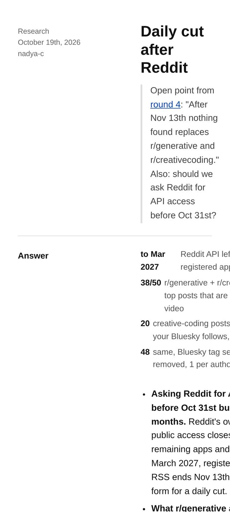
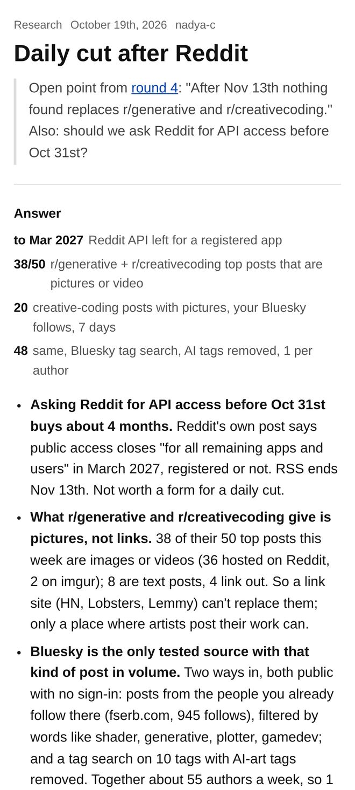
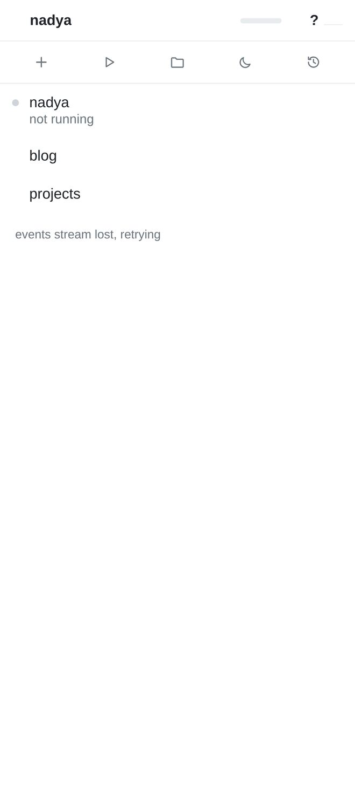

cc on the phone
Mocks for research/cc-phone.html (cc-a, Oct 19th). A and B are real screenshots at 412x915 in headless Chrome; the "after" in A is the live page with the six CSS lines of proposal 1 added in the browser. C, D and E are drawn.
A. A research post from the inbox (proposal 1)


B. No connection (proposal 4)

no connection · showing 14:02, retrying
＋▷▢☾↺
- nadyanadya
- blog14:01fractal-git's two-way sync passed all 41 checks…
- projects
- UPDATES
- inbox 41 new14:00Daily cut after Reddit: what replaces the art…
- parcels 5WedFedEx, Ecualama
- SESSIONS
- iron-kweb/ironiron: cleanup + refactor on nadya
- nadya-dnadyafree cycles: shelf
Message nadya · sent when back online↑
C, D, E. A push, a tap, a fresh page (proposals 5, 6, 7)
nadya · nowiron-k waits on you (2 min)Which name for the config file? · iron.toml / config.json
＋▷▢☾↺
- nadyanadya
- blog3min
- SESSIONS
- iron-k ?web/ironWhich name for the config file?
/cc/#nadya.1716283.The ports-flow trial needs a config file before I commit it.
question · 2 min
Which name for the config file?
○ iron.tomlnext to package.json
○ config.jsonin src/
Message iron-k↑
cc was updated 4 min agoreload
＋▷▢☾↺
- nadyanadya
- blog3min
- projects
- UPDATES
- inbox 41 new1min
- SESSIONS
- nadya-dnadyafree cycles: shelf
dashed marks a tap target at 44 px or more.